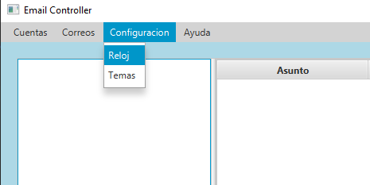
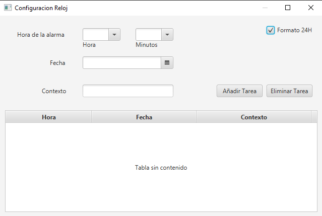
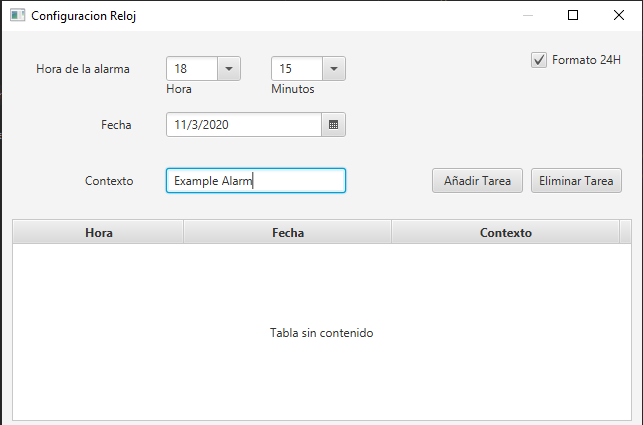
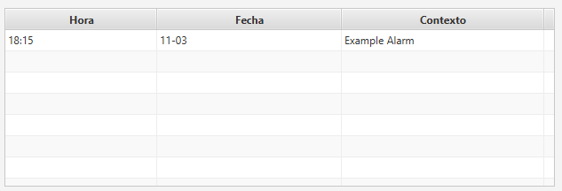
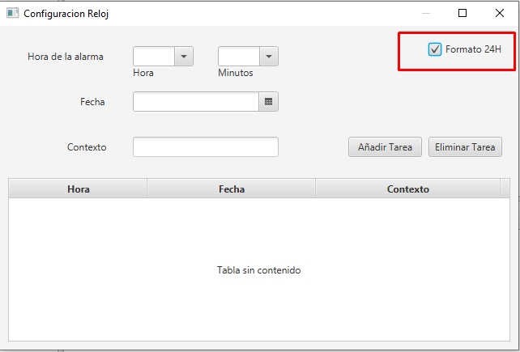
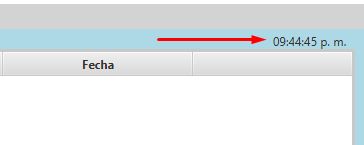

Alarm Configuration
To configure an alarm you need to access the "Configuracion Menu"
and go into "Reloj"
Here you can add a new alarm, remove an existing one, or change the visualization mode of the clock.


In this area we can configure the alarms for the application. You need to choose the hour (24H format)
and minute, the day and a text for it.
One you have all data introduced, you can add it with the button on the side. It will appear on the downside table.
The other button allows you to remove an alarm from the table.


Finally you can change the format (24h/12h) of the clock here.
That will change the display in the main window of the app.

